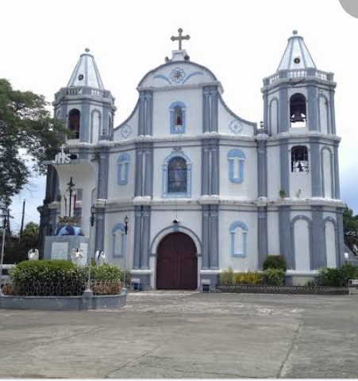

CABA TOURIST ATTRACTIONS
DIEGO SILANG MONUMENT
Diego Silang Monument is located in Caba. He was a Filipino revolutionary leader who allied with British forces to overthrow Spanish Rule in the northern Philippines and establish an independent Ilocano state. He met an Itneg women with the name of Gabriela Carino later known as Gabriela Silang.
LOMBOY GRAPES FARM
La Union's Grape Farm is believed to be started by Avalino Lomboy who owns Lomboy Grape Farm. He started planting in the 70's as a hobby and since then, it has grown into a large business. He shared his knowledge in viticulture to other families in Bauang and eventually family-owned grape farms mushroomed in La Union.
SAINT JOHN THE BAPTISH PARISH

A Roman Catholic Church in Caba, La Union
LUNA TOURIST ATTRACTIONS
KAMAY NA BATO ART GALLERY
Kamay na Bato Art Gallery is a unique tourist attraction in Luna, La Union which offers an assortment of arts carved from stones. The art pieces are carved and assembled by Mr. Vong Kim, originally a Korean Nation. He graduated in Korea with a degree in fine arts specializing in sculpture.
NAMACPACAN CHURCH
The Namacpacan Church also known as the Santa Catalina de Alejandria Church is a Roman Catholic churh located in Luna (formerly Namacpacan), La Union, Philippines under the jurisdiction of the Roman Catholic Diocese of San Fernando de La Union.
BALUARTE
Locally called as Baluarte, the watchtower in Barangay Victoria was built during the Spansih Period as a solution to the frequent ransacking of Japanese, Chinese, Moro Pirates in the coastal town of La Union. The fortress was used by the Spaniards to warn its resident against looters. During World War II, it functioned as the communication tower post for a temporary airfield for the USAFIPNL forces.